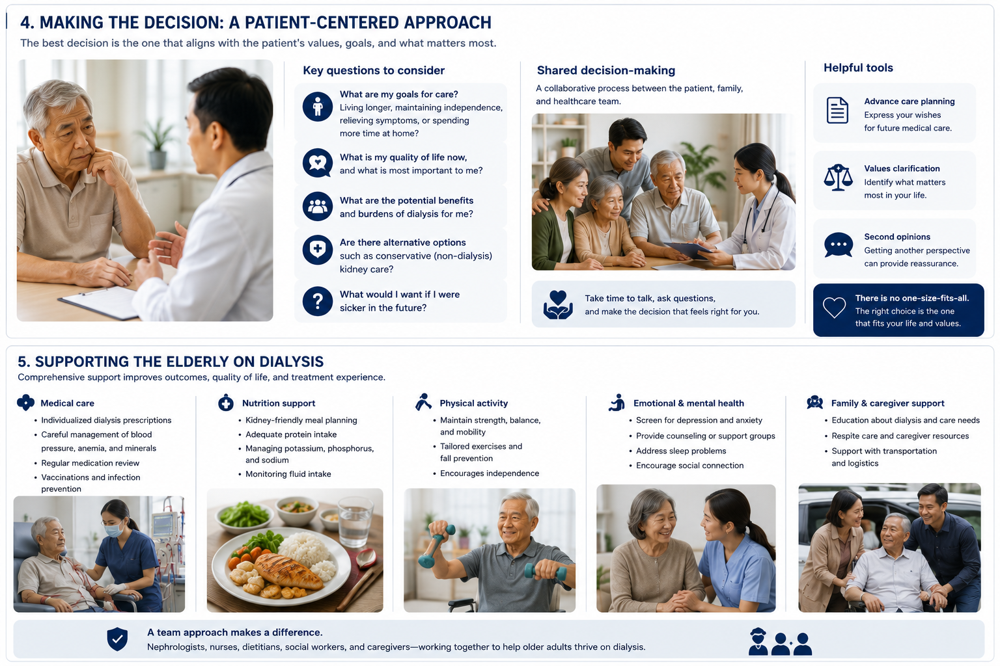
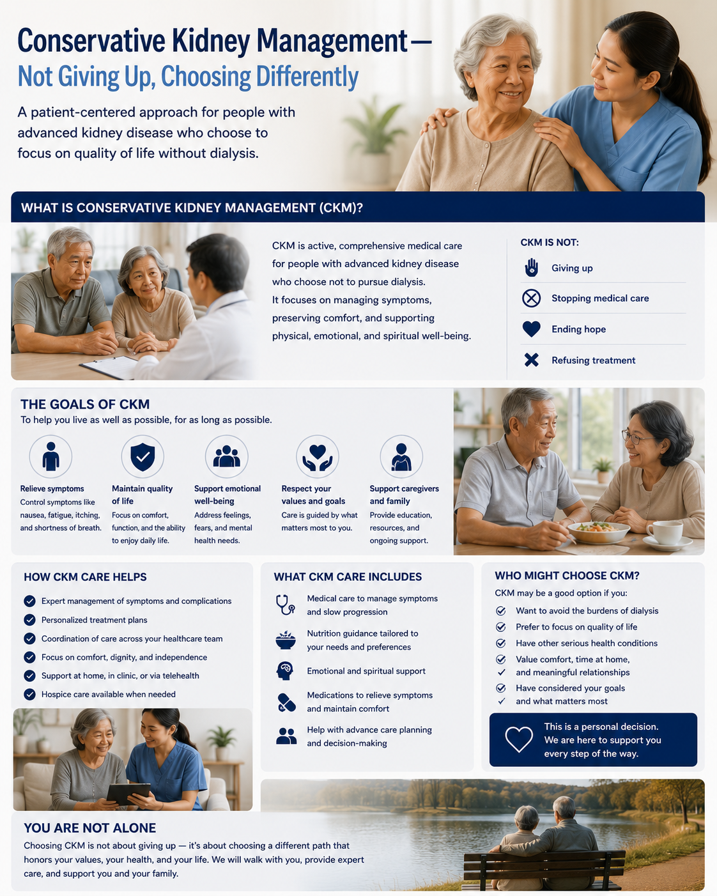
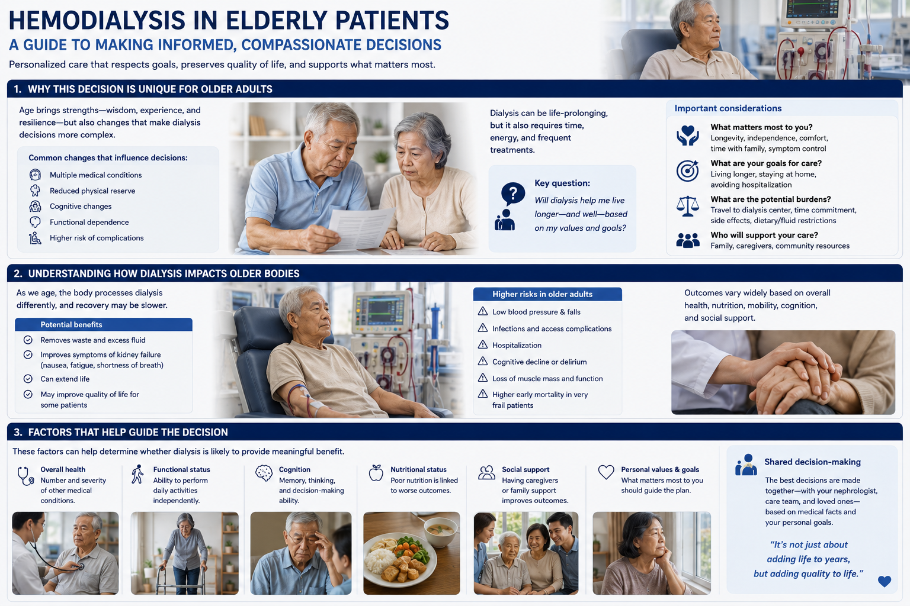

Why Dialysis in the Elderly Is Different Bakit Naiiba ang Dialysis sa Matatanda Ngano nga Lain ang Dialysis sa mga Tigulang Bakit Kakaiba ing Dialysis king Deng Matatanda
Dialysis works the same way in an 80-year-old as in a 40-year-old — but the outcomes are very different. The elderly patient brings to dialysis a lifetime of accumulated disease: diabetes, heart failure, stroke, weak bones, poor nutrition, and often cognitive decline. The kidneys are not the only failing organ system. Dialysis replaces kidney function, but it cannot repair everything else that aging and disease have damaged. Understanding this is the starting point for an honest, patient-centered conversation about whether, when, and how to dialyze an older patient. Ang dialysis ay gumagana nang parehong paraan sa isang 80-taong-gulang at sa isang 40-taong-gulang — ngunit ang mga kinalabasan ay napaka-iba. Ang matatandang pasyente ay nagdadala sa dialysis ng isang habambuhay na naipon na sakit: diabetes, heart failure, stroke, mahinang buto, mahinang nutrisyon, at madalas na cognitive decline. Ang dialysis ay pumapalit sa pag-andar ng bato, ngunit hindi nito maaayos ang lahat ng iba pang nasira ng pagtanda at sakit. Ang dialysis naglihok sa pareho nga paagi sa usa ka 80-anyos ug sa usa ka 40-anyos — apan ang mga kinalabasan lahi kaayo. Ang matatandang pasyente nagdala sa dialysis sa tibuok kinabuhi nga natigom nga sakit: diabetes, heart failure, stroke, huyang nga bukog, huyang nga nutrisyon, ug kasagaran cognitive decline. Ang dialysis nagilis sa pag-andar sa kidney, apan dili kini maaayos ang tanan pang gisira sa pagkatigulang ug sakit. Ing dialysis gumagana nang parehong paraan king isang 80-taong-gulang at king isang 40-taong-gulang — ngunit deng kinalabasan napaka-iba. Ing matatandang pasyente nagdadala king dialysis ning isang habambuhay a naipon a sakit: diabetes, heart failure, stroke, mahinang buto, mahinang nutrisyon, at madalas a cognitive decline. Ing dialysis pumapalit king paggawa ning batu, ngunit hindi niti maaayos sablang iba pang nasira ning pagtanda at sakit.

The landmark NEJM study every family should knowAng landmark na pag-aaral ng NEJM na dapat malaman ng bawat pamilyaAng landmark nga pag-aaral sa NEJM nga kinahanglan mahibaloan sa matag pamilyaIng landmark a pag-aaral ning NEJM a dapat malaman ning bawat pamilya
Kurella Tamura et al. (NEJM 2009) followed nursing-home residents aged 73+ who started dialysis. Within 3 months of starting, 58% had a sustained decline in functional status — they lost the ability to perform basic daily activities they could do before dialysis started. By one year, most could no longer walk independently, bathe, or dress themselves. Starting dialysis kept them alive — but not in the life they had. This does not mean dialysis is wrong. It means the decision must be made with clear eyes. Sinundan ni Kurella Tamura et al. (NEJM 2009) ang mga residente ng nursing home na may edad 73+ na nagsimula ng dialysis. Sa loob ng 3 buwan mula sa pagsisimula, 58% ay nagkaroon ng patuloy na pagbaba ng functional status — nawala sa kanila ang kakayahang gawin ang mga pangunahing pang-araw-araw na gawain na nagagawa nila bago magsimula ang dialysis. Gisunod ni Kurella Tamura et al. (NEJM 2009) ang mga residente sa nursing home nga edad 73+ nga nagsugod sa dialysis. Sulod sa 3 buwan mula sa pagsugod, 58% nagkaroon sa padayon nga paghulog sa functional status — nawala kanila ang abilidad sa paghimo sa mga pangunahing adlaw-adlaw nga kalihokan nga gibuhat nila sa wala pa ang dialysis magsugod. Sinundan ni Kurella Tamura et al. (NEJM 2009) deng residente ning nursing home a edad 73+ a nagsimula ning dialysis. King loob ning 3 buwan mula king pagsisimula, 58% nagkaroon ning patuloy a pagbaba ning functional status — nawala king kela ing kakayahang gawin deng pangunahing pang-araw-araw a gawain a nagagawa nila bago ing dialysis magsimula.
What Is Frailty — and Why It Changes Everything Ano ang Frailty — at Bakit Binabago Nito ang Lahat Unsa ang Frailty — ug Ngano nga Gibag-o Niini ang Tanan Nanung ing Frailty — at Bakit Binabago Niti Ing Sablang
Frailty is not the same as old age. It is a medical syndrome of reduced physiologic reserve — the body has lost its ability to bounce back from stress. A frail patient who gets a minor infection ends up hospitalized. A frail patient who starts dialysis often cannot tolerate the physical demands of thrice-weekly sessions. Frailty in dialysis patients is 30–80% prevalent depending on the population — substantially higher than in age-matched non-dialysis patients. In CKD, frailty and kidney disease worsen each other in a vicious cycle. Ang frailty ay hindi kapareho ng pagtanda. Ito ay isang medikal na sindrom ng nabawasang physiologic reserve — ang katawan ay nawalan ng kakayahang makabawi mula sa stress. Ang isang frail na pasyente na nagkasakit ng minor infection ay nagtatapos sa ospital. Ang frailty sa mga pasyente ng dialysis ay 30–80% na prevalente depende sa populasyon. Ang frailty dili kapareho sa pagkatigulang. Usa kini ka medikal nga sindrom sa nabawasang physiologic reserve — ang lawas nawad-an sa abilidad nga makabawi gikan sa stress. Ang usa ka frail nga pasyente nga masakit sa minor infection nagtapos sa ospital. Ang frailty sa mga pasyente sa dialysis 30–80% nga prevalent depende sa populasyon. Ing frailty hindi kapareho ning pagtanda. Iti isang medikal a sindrom ning nabawasang physiologic reserve — ing katawan nawalan ning kakayahang makabawi mula king stress. Ing isang frail a pasyente a nagkasakit ning minor infection nagtatapos king ospital. Ing frailty king deng pasyente ning dialysis 30–80% prevalent depende king populasyon.
The Clinical Frailty Scale (CFS) — A Practical Tool Ang Clinical Frailty Scale (CFS) — Isang Praktikal na Kasangkapan Ang Clinical Frailty Scale (CFS) — Usa ka Praktikal nga Himan Ing Clinical Frailty Scale (CFS) — Isang Praktikal a Kasangkapan
The Clinical Frailty Scale (CFS) grades from 1 (very fit) to 9 (terminally ill). A 2024 Japanese study of 101 patients aged ≥75 starting hemodialysis found that those with CFS ≥5 (mildly frail or worse) had significantly higher 6-month mortality than those with CFS <5. The CFS is now part of routine pre-dialysis assessment in many nephrology centers. Ang Clinical Frailty Scale (CFS) ay nagbibigay ng grado mula 1 (napaka-fit) hanggang 9 (terminally ill). Isang 2024 na pag-aaral sa Japan ng 101 pasyente na may edad ≥75 na nagsisimula ng hemodialysis ay natuklasan na ang mga may CFS ≥5 ay may makabuluhang mas mataas na 6-buwang mortality kaysa sa mga may CFS <5. Ang Clinical Frailty Scale (CFS) naghatag og grado gikan sa 1 (hapsay kaayo) hangtod sa 9 (terminally ill). Usa ka 2024 nga pag-aaral sa Japan sa 101 ka pasyente nga edad ≥75 nga nagsugod sa hemodialysis nakit-an nga ang mga adunay CFS ≥5 adunay makasabot nga mas taas nga 6-bulan nga mortality kaysa sa mga adunay CFS <5. Ing Clinical Frailty Scale (CFS) nagbibigay ning grado mula 1 (napaka-fit) anggang 9 (terminally ill). Metung a 2024 a pag-aaral king Japan ning 101 a pasyente a edad ≥75 a nagsisimula ning hemodialysis natuklasan na deng maki CFS ≥5 maki makabuluhang mas mataas a 6-buwang mortality kaysa king deng maki CFS <5.
What Dialysis Realistically Offers an Older Patient Ano ang Makatotohanang Inaalok ng Dialysis sa Matatandang Pasyente Unsa ang Makatinuod nga Giaalok sa Dialysis sa Matatandang Pasyente Nanung Makatotohanang Inaalok ning Dialysis king Matatandang Pasyente
Dialysis does what the failed kidneys cannot: removes toxins and excess fluid, corrects electrolytes, and controls blood pressure. But in an elderly, frail patient, the arithmetic of time spent in sessions versus time alive versus quality of that life must be calculated honestly. Three 4-hour sessions per week = 12 hours in a dialysis chair, plus travel, plus recovery. For a patient who is already exhausted, that is a significant portion of waking life. Ang dialysis ay gumagawa ng hindi magagawa ng mga nasirang bato: nag-aalis ng mga toxin at labis na likido, nagwawasto ng electrolytes, at nagkokontrol ng presyon ng dugo. Ngunit sa isang matatanda, frail na pasyente, ang aritmetika ng oras na ginugol sa mga sesyon kumpara sa oras na nabubuhay kumpara sa kalidad ng buhay na iyon ay dapat kalkulahin nang matapat. Tatlong 4-oras na sesyon bawat linggo = 12 oras sa dialysis chair, kasama ang pagbiyahe, kasama ang pagbawi. Ang dialysis naghimo sa wala mahimo sa mga nasamdan nga kidney: nagtangtang sa mga toxin ug sobra nga likido, nagpwesto sa mga electrolyte, ug nagkontrol sa presyon sa dugo. Apan sa usa ka matatanda, frail nga pasyente, ang aritmetika sa oras nga gigahin sa mga sesyon vs oras nga buhi vs kalidad nianang kinabuhi kinahanglan matinuod nga kalkulahon. Tulo ka 4-oras nga sesyon matag semana = 12 ka oras sa dialysis chair, dugang paglakbay, dugang pagbawi. Ing dialysis gumagawa ning hindi magagawa ning deng nasirang batu: nag-aalis ning deng toxin at labis a likido, nagwawasto ning deng electrolyte, at nagkokontrol ning presyon ning dala. Ngunit king isang matatanda, frail a pasyente, ing aritmetika ning oras a ginugol king deng sesyon kumpara king oras a nabubuhay kumpara king kalidad niting buhay dapat kalkulahin nang matapat. Tatlong 4-oras a sesyon bawat linggo = 12 oras king dialysis chair, kasama ing paglalakbay, kasama ing pagbawi.
| AspectAspetoAspetoAspeto | What Dialysis CAN DoAno ang MAGAGAWA ng DialysisUnsa ang MAHIMO sa DialysisNanung MAGAGAWA ning Dialysis | What Dialysis CANNOT DoAno ang HINDI MAGAGAWA ng DialysisUnsa ang DILI MAHIMO sa DialysisNanung HINDI MAGAGAWA ning Dialysis |
|---|---|---|
| SurvivalKaligtasanPagsurviveKaligtasan | Extends life beyond what kidneys alone could sustainNagpapahaba ng buhay nang higit pa sa kung ano lamang ang kaya ng mga batoNagpalugway sa kinabuhi labi pa sa kung unsa lamang ang makaya sa mga kidneyNagpapahaba ning buhay nang higit pa sa kung nanung lamang ang kaya ning deng batu | Cannot stop overall aging or death from other organ failures (heart, brain, liver)Hindi mapipigilang tumanda o mamatay mula sa pagpalya ng ibang organ (puso, utak, atay)Dili makapugong sa kinatibuk-ang pagkatigulang o kamatayon gikan sa pagpalya sa ubang organHindi mapipigilan ing kabuuang pagtanda o kamatayan mula king pagpalya ning iba pang organ |
| SymptomsMga SintomasMga SintomasDeng Sintomas | Reduces uremic symptoms (nausea, confusion, breathlessness from fluid)Nagbabawas ng mga uremic symptoms (pagduduwal, kalituhan, pangangapos ng hininga mula sa likido)Nagkunhod sa mga uremic symptom (pagdulaw, kalibog, kakulang sa gininhawa gikan sa likido)Nagbabawas ning deng uremic symptom (pagduduwal, kalituhan, pangangapos ning hininga mula king likido) | Introduces new burdens: intradialytic hypotension, cramps, exhaustion, infection risk, falls from hypotensionNagpapakilala ng bagong pabigat: intradialytic hypotension, mga pulikat, pagod, panganib ng impeksyon, mga pagkahulog mula sa hypotensionNagpaila sa bag-ong mga pabug-at: intradialytic hypotension, mga pulikat, pagkakapoy, risgo sa impeksyon, mga pagkahulog gikan sa hypotensionNagpapakilala ning bagong deng pabigat: intradialytic hypotension, deng pulikat, pagod, panganib ning impeksyon, deng pagkahulog mula king hypotension |
| Function & MobilityPag-andar at Kagalaw-galawPag-andar ug KakusogPaggawa at Kagalaw-galaw | Cognitive clarity may improve as uremic toxins clearAng klarity ng kognitibo ay maaaring mapabuti habang naaalis ang mga uremic toxinAng kalinaw sa pangisip mahimong mapauswag samtang matangtang ang mga uremic toxinIng klarity ning kognitibo maaaring mapabuti habang naaalis deng uremic toxin | Post-dialysis fatigue (4–8 hours typical) reduces usable time dramatically. 58% of frail elderly patients lose functional abilities within 3 months of starting HD.Ang post-dialysis fatigue (4–8 oras na karaniwan) ay lubos na nagbabawas ng magagamit na oras. 58% ng mga frail na matatandang pasyente ay nawawalan ng mga kakayahan sa loob ng 3 buwan mula sa pagsisimula ng HD.Ang post-dialysis fatigue (4–8 ka oras nga kasagaran) nagkunhod nang grabe sa magamit nga oras. 58% sa mga frail nga matatandang pasyente nawad-an sa mga abilidad sulod sa 3 buwan mula sa pagsugod sa HD.Ing post-dialysis fatigue (4–8 oras a karaniwang) lubos nagbabawas ning magagamit a oras. 58% ning deng frail a matatandang pasyente nawawalan ning deng kakayahan king loob ning 3 buwan mula king pagsisimula ning HD. |
| TimeOrasOrasOras | Grants months to years of additional life, allowing time for family, important events, or waiting for transplantNagbibigay ng karagdagang buwan hanggang taon ng buhay, nagbibigay-oras para sa pamilya, mahahalagang kaganapan, o paghihintay para sa transplantNaghatag og dugang nga mga bulan hangtod mga tuig sa kinabuhi, naghatag sa oras alang sa pamilya, importanteng mga panghitabo, o paghulat alang sa transplantNagbibigay ning karagdagang buwan anggang taon ning buhay, nagbibigay-oras para king pamilya, mahahalagang kaganapan, o paghihintay para king transplant | 12 hrs/week in a chair + travel + recovery = significant time cost. For a patient already struggling with fatigue, this may consume most productive hours.12 hrs/linggo sa upuan + pagbiyahe + pagbawi = malaking gastos sa oras. Para sa isang pasyente na nagagalit na sa pagod, maaari itong kainin ang karamihan ng mga produktibong oras.12 hrs/semana sa lingkuranan + pagbiyahe + pagbawi = dakong gastos sa oras. Alang sa usa ka pasyente nga nagapangalag na sa pagkakapoy, kini mahimong mokaon sa kadaghanan sa produktibo nga mga oras.12 hrs/linggu king upuan + paglalakbay + pagbawi = malaking gastos king oras. Para king isang pasyente a nagagalit na king pagod, maaaring kainin iti ing karamihan ning deng produktibong oras. |
Specific Risks of Dialysis in Older Patients Mga Tukoy na Panganib ng Dialysis sa Mga Matatandang Pasyente Mga Espesipiko nga Risgo sa Dialysis sa mga Matatandang Pasyente Deng Tukoy a Panganib ning Dialysis king Deng Matatandang Pasyente
Intradialytic hypotension — falls, stroke, and cardiac eventsIntradialytic hypotension — mga pagkahulog, stroke, at cardiac eventsIntradialytic hypotension — mga pagkahulog, stroke, ug cardiac eventsIntradialytic hypotension — deng pagkahulog, stroke, at cardiac events
Blood pressure drops during dialysis are more frequent and more dangerous in the elderly, whose cardiovascular system is less able to compensate. A BP crash during a session can trigger myocardial stunning (repeated small heart injuries), accelerate cognitive decline, or cause falls on the way to the bathroom during the session. Elderly patients should always have blood pressure monitored every 30 minutes during dialysis and should be assisted when standing. Ang mga pagbaba ng presyon ng dugo sa panahon ng dialysis ay mas madalas at mas mapanganib sa matatanda, na ang cardiovascular system ay hindi gaanong makakatugon. Ang pagbaba ng BP sa panahon ng sesyon ay maaaring mag-trigger ng myocardial stunning, magpabilis ng cognitive decline, o magdulot ng mga pagkahulog. Ang mga paghulog sa presyon sa dugo sa panahon sa dialysis mas kanunay ug mas delikado sa mga tigulang, nga ang cardiovascular system dili kaayo makasagop. Ang paghulog sa BP sa panahon sa sesyon mahimong mag-trigger sa myocardial stunning, mapabilis sa cognitive decline, o magdala sa mga pagkahulog. Deng pagbaba ning presyon ning dala sa panahon ning dialysis mas madalas at mas mapanganib king deng matatanda, a ang cardiovascular system hindi gaanong makaka-tugon. Ing pagbaba ning BP sa panahon ning sesyon maaaring mag-trigger ning myocardial stunning, magpabilis ning cognitive decline, o magdulot ning deng pagkahulog.
Accelerated cognitive declinePinabilis na cognitive declineGipadali nga cognitive declinePinabilis a cognitive decline
Frailty at dialysis initiation is an independent predictor of cognitive decline in the first year. Multiple mechanisms are at play: repeated hypotension causes small brain injuries; cerebral blood flow changes during dialysis are less well-tolerated in older brains; uremic toxins, even with dialysis, are not fully cleared. Cognitive decline impacts adherence, diet control, medication management, and safety at home. Ang frailty sa pagsisimula ng dialysis ay isang independyenteng tagahula ng cognitive decline sa unang taon. Maraming mekanismo ang gumaganap: ang paulit-ulit na hypotension ay nagdudulot ng maliliit na pinsala sa utak; ang mga pagbabago ng cerebral blood flow sa panahon ng dialysis ay hindi gaanong natitiiis ng mga matatandang utak. Ang frailty sa pagsugod sa dialysis usa ka independyenteng tagahulagway sa cognitive decline sa unang tuig. Daghan ka mga mekanismo ang naglihok: ang paulit-ulit nga hypotension nagdala sa gagmay nga pinsala sa utok; ang mga pagbabago sa cerebral blood flow sa panahon sa dialysis dili kaayo gitolerate sa mga mas tigulang nga utok. Ing frailty king pagsisimula ning dialysis isang independyenteng tagahula ning cognitive decline king unang taon. Daramihang mekanismo ang gumaganap: ing paulit-ulit a hypotension nagdudulot ning maliliit a pinsala king utak; deng pagbabago ning cerebral blood flow sa panahon ning dialysis hindi gaanong natitiiis ning deng matatandang utak.
Protein-energy wasting and sarcopeniaProtein-energy wasting at sarcopeniaProtein-energy wasting ug sarcopeniaProtein-energy wasting at sarcopenia
Dialysis itself causes protein loss. The post-dialysis fatigue suppresses appetite. The dietary restrictions of CKD (low potassium, low phosphorus) reduce food variety. Together these drive malnutrition and muscle wasting — which worsens frailty and accelerates functional decline. Nutritional support (high-protein diet 1.2–1.5g/kg/day, supplemented with oral nutritional supplements during dialysis sessions) is essential and often neglected. Ang dialysis mismo ay nagdudulot ng pagkawala ng protina. Ang post-dialysis fatigue ay nagpapahina ng gana sa pagkain. Ang mga paghihigpit sa pagkain ng CKD ay nagbabawas ng pagkakaiba-iba ng pagkain. Magkasama, ang mga ito ay nagdudulot ng malnutrition at pag-ubos ng kalamnan. Ang dialysis mismo nagdala sa pagkawala sa protina. Ang post-dialysis fatigue nagpahubag sa ganahan sa pagkaon. Ang mga pagdili sa pagkaon sa CKD nagkunhod sa nagkakalain-laing pagkaon. Kauban kini nagdala sa malnutrition ug pagkawagtang sa kalamnan. Ing dialysis mismo nagdudulot ning pagkawala ning protina. Ing post-dialysis fatigue nagpapahina ning gana king pagkain. Deng paghihigpit king pagkain ning CKD nagbabawas ning pagkakaiba-iba ning pagkain. Magkasama, keti nagdudulot ning malnutrition at pag-ubos ning kalamnan.
Polypharmacy and medication burdenPolypharmacy at pabigat ng gamotPolypharmacy ug pabug-at sa tambalPolypharmacy at pabigat ning gamut
The average elderly dialysis patient takes 10–15 medications. Many are renally cleared, requiring careful dose adjustment at each stage of CKD progression. Drug interactions multiply with each new prescription. Medications for diabetes, hypertension, bone disease, anemia, and heart disease — on top of phosphorus binders at each meal — create a pill burden that overwhelms many patients and caregivers. Regular medication review by the nephrologist is essential. Ang average na matatandang pasyente ng dialysis ay kumukuha ng 10–15 na gamot. Marami ang renally cleared, nangangailangan ng maingat na pagsasaayos ng dosis sa bawat yugto ng pag-unlad ng CKD. Ang mga drug interactions ay nagpaparami sa bawat bagong reseta. Ang average nga matatandang pasyente sa dialysis nagkuha og 10–15 ka tambal. Daghan ang renally cleared, nagkinahanglan sa maampingon nga pagsaayos sa dosis sa matag yugto sa pag-abante sa CKD. Ang mga drug interactions nagpadaghan sa matag bag-ong reseta. Ing average a matatandang pasyente ning dialysis kumukuha ning 10–15 a gamut. Daramihan renally cleared, nangangailangan ning maingat a pagsasaayos ning dosis king bawat yugto ning pag-unlad ning CKD. Deng drug interactions nagpaparami king bawat bagong reseta.
Choosing the Right Dialysis Modality for an Older Patient Pagpili ng Tamang Modalidad ng Dialysis para sa Matatandang Pasyente Pagpili sa Hustong Modalidad sa Dialysis alang sa Matatandang Pasyente Pagpili ning Tamang Modalidad ning Dialysis para king Matatandang Pasyente
Incremental hemodialysis — start with less, not moreIncremental hemodialysis — magsimula sa mas kaunti, hindi sa mas maramiIncremental hemodialysis — magsugod sa mas gamay, dili sa mas daghanIncremental hemodialysis — magsimula king mas kaunti, hindi king mas marami
For elderly patients with significant residual kidney function (still making urine), incremental hemodialysis — starting with 1–2 sessions per week instead of the standard 3 — is now supported by evidence and KDIGO 2024. This reduces the treatment burden on a frail patient while residual kidney function does the rest. As residual function declines, session frequency increases. The evidence shows no significant adverse outcomes during the period of significant residual function. For an elderly patient who is barely tolerating dialysis, the difference between 2 and 3 sessions per week is enormous for quality of life. Para sa mga matatandang pasyente na may makabuluhang natitirang pag-andar ng bato, ang incremental hemodialysis — pagsisimula sa 1–2 sesyon bawat linggo sa halip na standard na 3 — ay suportado na ng katibayan at KDIGO 2024. Nagbabawas ito ng pabigat ng paggamot sa isang frail na pasyente habang ang natitirang pag-andar ng bato ang gumagawa ng iba. Para sa isang matatandang pasyente na halos hindi kayang tiisin ang dialysis, malaki ang pagkakaiba sa pagitan ng 2 at 3 na sesyon bawat linggo para sa kalidad ng buhay. Para sa mga matatandang pasyente nga adunay makasabot nga nahibilin nga pag-andar sa kidney, ang incremental hemodialysis — pagsugod sa 1–2 sesyon matag semana imbes sa standard nga 3 — gisuportahan na sa ebidensya ug KDIGO 2024. Nagkunhod kini sa pabug-at sa pagtambal sa usa ka frail nga pasyente samtang ang nahibilin nga pag-andar sa kidney ang naghimo sa uban. Alang sa usa ka matatandang pasyente nga halos dili makasagop sa dialysis, ang kalainan tali sa 2 ug 3 sesyon matag semana dako para sa kalidad sa kinabuhi. Para king deng matatandang pasyente a maki makabuluhang natitirang paggawa ning batu, ing incremental hemodialysis — pagsisimula king 1–2 sesyon bawat linggo imbes king standard a 3 — suportado na ning katibayan at KDIGO 2024. Nagbabawas iti ning pabigat ning paggamot king isang frail a pasyente habang ing natitirang paggawa ning batu ing gumagawa ning iba. Para king isang matatandang pasyente a halos hindi kayang tiisin ing dialysis, malaki ing pagkakaiba sa pagtali ning 2 at 3 a sesyon bawat linggu para king kalidad ning buhay.
Peritoneal Dialysis (PD) — Often Underutilized in ElderlyPeritoneal Dialysis (PD) — Madalas na Hindi Ginagamit sa MatatandaPeritoneal Dialysis (PD) — Kasagaran Kulang-gamiton sa mga TigulangPeritoneal Dialysis (PD) — Madalas a Hindi Ginagamit king Deng Matatanda
PD avoids intradialytic hypotension, requires no fistula needles, has no thrice-weekly schedule, and removes fluid more gently. For a frail elderly patient, APD (automated overnight) done by a trained caregiver while the patient sleeps can dramatically reduce the treatment burden. Studies show PD patients maintain better functional status in the first 2–3 years. Age alone is not a contraindication for PD. Ang PD ay umiiwas sa intradialytic hypotension, hindi nangangailangan ng mga karayom sa fistula, walang iskedyul na tatlong beses sa isang linggo, at mas malambot na nag-aalis ng likido. Para sa isang frail na matatandang pasyente, ang APD na ginagawa ng isang sinanay na tagapag-alaga habang natutulog ang pasyente ay maaaring lubos na magbawas ng pabigat ng paggamot. Ang edad lamang ay hindi isang kontraindikasyon para sa PD. Ang PD naghimo aron malikayan ang intradialytic hypotension, walay fistula needle, walay tatlong beses sa usa ka semana nga iskedyul, ug mas hinay nga nagtangtang sa likido. Alang sa usa ka frail nga matatandang pasyente, ang APD nga gibuhat sa usa ka bansay nga taga-atiman samtang natulog ang pasyente mahimong grabe nga magkunhod sa pabug-at sa pagtambal. Ang edad lamang dili usa ka kontraindikasyon alang sa PD. Ing PD umiiwas king intradialytic hypotension, hindi nangangailangan ning deng karayom king fistula, wala pang tatlong beses king isang linggong iskedyul, at mas malambot a nag-aalis ning likido. Para king isang frail a matatandang pasyente, ing APD a ginagawa ning isang sinanay a taga-alaga habang natutulog ing pasyente maaaring lubos magbawas ning pabigat ning paggamot. Ing edad lamang hindi isang kontraindikasyon para king PD.
Vascular Access — Plan Early, Plan RightVascular Access — Magplano Nang Maaga, Magplano Nang TamaVascular Access — Magplano nang Sayo, Magplano nang HustoVascular Access — Magplano Nang Maaga, Magplano Nang Tama
Fistulas take 6–12 weeks to mature and require adequate vessels. In elderly patients with diabetes and peripheral vascular disease, fistula maturation failure is more common. An AVF is still preferred over a catheter (much lower infection risk) but must be planned early. Temporary catheters in frail elderly patients have very high infection mortality. The right access at the right time requires planning 6–12 months before expected ESKD. Ang mga fistula ay tumatagal ng 6–12 linggo upang lumago at nangangailangan ng sapat na mga daluyan. Sa mga matatandang pasyente na may diabetes at peripheral vascular disease, ang kabiguan ng pagkahinog ng fistula ay mas karaniwan. Ang isang AVF ay mas gusto pa rin kaysa sa isang catheter ngunit dapat planong nang maaga. Ang tamang access sa tamang oras ay nangangailangan ng pagpaplano ng 6–12 buwan bago ang inaasahang ESKD. Ang mga fistula molungtad og 6–12 semana aron maluto ug nagkinahanglan sa sapat nga mga daluyan. Sa mga matatandang pasyente nga adunay diabetes ug peripheral vascular disease, ang kapalya sa pagkahinog sa fistula mas kasagaran. Ang usa ka AVF mas gusto pa kaysa sa usa ka catheter apan kinahanglan planohon nang sayo. Deng fistula tumatagal ning 6–12 linggo para lumago at nangangailangan ning sapat a deng daluyan. King deng matatandang pasyente a maki diabetes at peripheral vascular disease, ing kabiguan ning pagkahinog ning fistula mas karaniwan. Isang AVF mas gusto pa rin kaysa king isang catheter ngunit dapat planong nang maaga.
Session Modifications for Elderly PatientsMga Pagbabago sa Sesyon para sa Matatandang PasyenteMga Pagbabago sa Sesyon alang sa mga Matatandang PasyenteDeng Pagbabago king Sesyon para king Deng Matatandang Pasyente
Longer, gentler sessions (4.5–5 hours at lower blood flow rates) reduce intradialytic hypotension. Cooled dialysate (35°C instead of 37°C) reduces BP drops. Midodrine before sessions helps volume-depleted patients. Seated exercise during dialysis (even simple pedaling) reduces post-dialysis fatigue and preserves muscle mass. These modifications require discussion with your dialysis team. Ang mas mahabang, malambot na mga sesyon (4.5–5 oras sa mas mababang blood flow rates) ay nagbabawas ng intradialytic hypotension. Ang cooled dialysate (35°C sa halip na 37°C) ay nagbabawas ng mga pagbaba ng BP. Ang pagsasanay habang naka-upo sa dialysis (kahit simpleng pagpedal) ay nagbabawas ng post-dialysis fatigue at nagpapanatili ng kalamnan. Ang mas taas, mas hinay nga mga sesyon (4.5–5 ka oras sa mas ubos nga blood flow rates) nagkunhod sa intradialytic hypotension. Ang cooled dialysate (35°C imbes sa 37°C) nagkunhod sa mga paghulog sa BP. Ang pagbansay samtang naglingkod sa dialysis nagkunhod sa post-dialysis fatigue ug nagpreserba sa kalamnan. Deng mas matagal, malambot a deng sesyon (4.5–5 oras king mas mababang blood flow rates) nagbabawas ning intradialytic hypotension. Ing cooled dialysate (35°C imbes ning 37°C) nagbabawas ning deng pagbaba ning BP. Ing pagsasanay habang naka-upo king dialysis nagbabawas ning post-dialysis fatigue at nagpapanatili ning kalamnan.
Conservative Kidney Management — Not Giving Up, Choosing Differently Conservative Kidney Management — Hindi Sumuko, Pumipili nang Iba Conservative Kidney Management — Dili Pagtugyan, Lain nga Pagpili Conservative Kidney Management — Hindi Sumusuko, Pumipili nang Iba
Conservative Kidney Management (CKM) is not no treatment. It is active, comprehensive medical care that deliberately prioritizes quality of life and comfort over maximum lifespan extension. KDIGO 2024 explicitly recognizes CKM as a legitimate treatment pathway for patients with ESKD who do not wish to pursue dialysis, or for whom the burdens of dialysis outweigh the benefits. In the Philippines, CKM is rarely discussed with patients — but it should be, especially for frail elderly patients. Ang Conservative Kidney Management (CKM) ay hindi walang paggamot. Ito ay aktibo, komprehensibong medikal na pag-aalaga na sadyang inuuna ang kalidad ng buhay at kaginhawaan kaysa sa pinakamataas na pagpapahaba ng buhay. Ang KDIGO 2024 ay malinaw na kinikilala ang CKM bilang isang lehitimo na landas ng paggamot para sa mga pasyente na may ESKD na hindi gustong sumabak sa dialysis, o para sa kanino ang mga pabigat ng dialysis ay higit sa mga benepisyo. Sa Pilipinas, ang CKM ay bihirang talakayin sa mga pasyente — ngunit dapat, lalo na para sa mga frail na matatandang pasyente. Ang Conservative Kidney Management (CKM) dili walay pagtambal. Aktibo, komprehensibong medikal nga pag-atiman kini nga sadya nagprioritize sa kalidad sa kinabuhi ug kaginhawahan kaysa sa pinaka-taas nga pagpalugway sa kinabuhi. Ang KDIGO 2024 dayag nga nag-ila sa CKM isip usa ka lehitimo nga agianan sa pagtambal alang sa mga pasyente nga adunay ESKD nga dili gusto sa dialysis, o para kanila kansang mga pabug-at sa dialysis molapas sa mga benepisyo. Ing Conservative Kidney Management (CKM) hindi wala pang paggamot. Iti aktibo, komprehensibong medikal a pag-aalaga a sadyang inuuna ing kalidad ning buhay at kaginhawaan kaysa king pinakamataas a pagpapahaba ning buhay. Ing KDIGO 2024 malinaw na kinikilala ing CKM bilang isang lehitimo a landas ning paggamot para king deng pasyente a maki ESKD a hindi gustong sumabak king dialysis, o para kanino ing deng pabigat ning dialysis higit sa deng benepisyo.

✓ Dialysis is likely the right choice if...Ang dialysis ay malamang na tamang pagpipilian kung...Ang dialysis malamang ang tama nga pagpili kon...Ing dialysis malamang ing tamang pagpipilian kung...
- Patient has good functional reserve (CFS 1–4)Pasyente ay may magandang functional reserve (CFS 1–4)Pasyente adunay maayong functional reserve (CFS 1–4)Pasyente maki maayos a functional reserve (CFS 1–4)
- Patient has clear personal goals that dialysis can help achievePasyente ay may malinaw na mga personal na layunin na makakatulong ang dialysisPasyente adunay klaro nga personal nga mga tumong nga maatabang sa dialysisPasyente maki maliwanag a personal a deng layunin a makakatulong ing dialysis
- Tolerable transport and caregiver support at homeKatanggap-tanggap na transportasyon at suporta ng tagapag-alaga sa bahayKatanggap-tanggap nga transportasyon ug suporta sa taga-atiman sa balayKatanggap-tanggap a transportasyon at suporta ning taga-alaga king bale
- Adequate nutritional status and can maintain protein intakeSapat na katayuan ng nutrisyon at kayang mapanatili ang paggamit ng protinaSapat nga kahimtang sa nutrisyon ug makaya ang pagmentinar sa pagkonsumo sa protinaSapat a katayuan ning nutrisyon at kayang mapanatili ing paggamit ning protina
- Cognitive capacity to participate in care and diet managementCognitive na kapasidad na lumahok sa pag-aalaga at pamamahala ng diyetaCognitive nga kapasidad sa paglahok sa pag-atiman ug pagdumala sa diyetaCognitive a kapasidad na lumahok king pag-aalaga at pamamahala ning diyeta
⚠ The decision needs deeper discussion if...Ang desisyon ay nangangailangan ng mas malalim na talakayan kung...Ang desisyon nagkinahanglan sa mas lawom nga diskusyon kon...Ing desisyon nangangailangan ning mas malalim a talakayan kung...
- CFS 5–6 (mild to moderate frailty)CFS 5–6 (banayad hanggang katamtamang frailty)CFS 5–6 (leve hangtod katamtamang frailty)CFS 5–6 (banayad anggang katamtamang frailty)
- Multiple organ failure (heart, liver, diabetes) all advancedMaraming organ failure (puso, atay, diabetes) lahat advancedDaghang organ failure (kasingkasing, atay, diabetes) tanan advancedDaramihang organ failure (puso, atay, diabetes) sablang advanced
- Significant cognitive impairment limiting understanding of dialysisMakabuluhang cognitive impairment na naglilimita sa pag-unawa ng dialysisMakasabot nga cognitive impairment nga naglimitahan sa pagsabot sa dialysisMakabuluhang cognitive impairment a naglilimita king pag-unawa ning dialysis
- Patient has not expressed clear preferences about quality vs. quantity of lifeAng pasyente ay hindi nagpahayag ng malinaw na mga kagustuhan tungkol sa kalidad kumpara sa dami ng buhayAng pasyente wala nagpahayag sa klaro nga mga gusto bahin sa kalidad vs dami sa kinabuhiIng pasyente hindi nagpahayag ning maliwanag a deng kagustuhan tungkol king kalidad kumpara king dami ning buhay
✕ CKM may be more appropriate if...Ang CKM ay maaaring mas angkop kung...Ang CKM mahimong mas angay kon...Ing CKM maaaring mas angkop kung...
- CFS 7–9 (severe frailty or terminal illness)CFS 7–9 (matinding frailty o terminal na sakit)CFS 7–9 (grabe nga frailty o terminal nga sakit)CFS 7–9 (matinding frailty o terminal a sakit)
- Patient clearly values quality of life and independence over maximum lifespanAng pasyente ay malinaw na pinahahalagahan ang kalidad ng buhay at kalayaan kaysa sa pinakamataas na lifespanAng pasyente dayag nga nagpahalaga sa kalidad sa kinabuhi ug kagawasan kaysa sa pinaka-taas nga lifespanIng pasyente malinaw nagpapahalaga king kalidad ning buhay at kalayaan kaysa king pinakamataas a lifespan
- Home situation cannot support dialysis (no caregiver, far from center)Ang sitwasyon sa bahay ay hindi kayang suportahan ang dialysis (walang tagapag-alaga, malayo sa center)Ang kahimtang sa balay dili makasugod sa dialysis (walay taga-atiman, layo sa center)Ing sitwasyon king bale hindi kayang suportahan ing dialysis (wala pang taga-alaga, malayo king center)
- Patient explicitly refuses dialysis after informed discussionAng pasyente ay malinaw na tumatanggi sa dialysis pagkatapos ng informed na talakayanAng pasyente dayag nga nagsalikway sa dialysis pagkahuman sa informed nga diskusyonIng pasyente malinaw tumatanggis king dialysis pagkatapos ning informed a talakayan
- Life expectancy short regardless of dialysisInaasahang buhay ay maikli anuman ang mangyari kahit may dialysisInaasahan nga kinabuhi mubo bisan sa dialysisInaasahang buhay maikli anuman kahit maki dialysis
What CKM provides in the PhilippinesAno ang ibinibigay ng CKM sa PilipinasUnsa ang gihatag sa CKM sa PilipinasNanung ibinibigay ning CKM king Pilipinas
- Symptom management: Fluid removal with diuretics while still making urine; blood pressure medications; treatment of uremic pruritus, nausea, pain, and breathlessnessPamamahala ng sintomas: Pag-aalis ng likido gamit ang diuretics habang gumagawa pa ng ihi; mga gamot sa presyon ng dugo; paggamot ng uremic pruritus, pagduduwal, sakit, at pangangapos ng hiningaPagdumala sa sintomas: Pagtangtang sa likido gamit ang diuretics samtang naghimo pa sa ihi; mga tambal sa presyon sa dugo; pagtambal sa uremic pruritus, pagdulaw, sakit, ug kakulang sa gininhawaPamamahala ning sintomas: Pag-aalis ning likido gamit ing diuretics habang gumagawa pa ning ihi; deng gamut king presyon ning dala; paggamot ning uremic pruritus, pagduduwal, sakit, at pangangapos ning hininga
- Nutritional support: Renal diet with higher protein, supplemental feeding, treatment of protein-energy wastingSuporta sa nutrisyon: Renal diet na may mas mataas na protina, karagdagang pagpapakain, paggamot ng protein-energy wastingSuporta sa nutrisyon: Renal diet nga adunay mas taas nga protina, dugang nga pagpakaon, pagtambal sa protein-energy wastingSuporta king nutrisyon: Renal diet a maki mas mataas a protina, karagdagang pagpapakain, paggamot ning protein-energy wasting
- Family and caregiver support: Education on what to expect, how to provide comfort, when to seek emergency careSuporta sa pamilya at tagapag-alaga: Edukasyon sa kung ano ang inaasahan, kung paano magbigay ng kaginhawaan, kung kailan humingi ng pang-emergency na pag-aalagaSuporta sa pamilya ug taga-atiman: Edukasyon sa kung unsa ang ginaabtan, kung giunsa maghatag sa kaginhawahan, kanus-a mangita og emergency nga pag-atimanSuporta king pamilya at taga-alaga: Edukasyon king kung nanung inaasahan, kung panung magbigay ning kaginhawaan, kung kailan humingi ning pang-emergency a pag-aalaga
- Spiritual and psychological care: Preparation for end of life, connection with family, preservation of dignityEspirituwal at sikolohikal na pag-aalaga: Paghahanda para sa katapusan ng buhay, koneksyon sa pamilya, pagpapanatili ng dignidadEspirituwal ug sikolohikal nga pag-atiman: Paghanda alang sa katapusan sa kinabuhi, koneksyon sa pamilya, pagpreserba sa dignidadEspirituwal at sikolohikal a pag-aalaga: Paghahanda para king katapusan ning buhay, koneksyon king pamilya, pagpapanatili ning dignidad
Questions to Ask Your Nephrologist Mga Tanong na Dapat Itanong sa Iyong Nephrologist Mga Pangutana nga Itanong sa Imong Nephrologist Deng Tanong a Dapat Itanong king Nephrologist Mo
The decision about dialysis for an elderly patient should never be made by a family in crisis, on the night of an emergency admission, without prior discussion. It should be a planned conversation — ideally months before it becomes urgent. The following questions help families engage meaningfully: Ang desisyon tungkol sa dialysis para sa isang matatandang pasyente ay hindi dapat gawin ng isang pamilya sa krisis, sa gabi ng isang emergency na admission, nang walang nakaraang talakayan. Ito ay dapat isang naplanong pag-uusap — idealmente ilang buwan bago maging mahalaga ito. Ang desisyon bahin sa dialysis alang sa usa ka matatandang pasyente dili gayud buhaton sa usa ka pamilya sa krisis, sa gabii sa usa ka emergency nga pagtanggap, nga walay nauna nga diskusyon. Kinahanglan kini usa ka naplanong pag-istoryahanay — ideyal nga mga bulan sa wala pa kini mahinungdanon. Ing desisyon tungkol king dialysis para king isang matatandang pasyente hindi dapat gawin ning isang pamilya king krisis, king gabi ning isang emergency a admission, nang wala pang nakaraang talakayan. Dapat iti isang naplanong pag-uusap — idealmente deng buwan bago iti magiging mahalaga.

Questions Every Family Should Ask Before Starting Dialysis in an Elderly Patient Mga Tanong na Dapat Itanong ng Bawat Pamilya Bago Simulan ang Dialysis sa Matatandang Pasyente Mga Pangutana nga Kinahanglan Itanong sa Matag Pamilya sa wala pa Magsugod ang Dialysis sa Matatandang Pasyente Deng Tanong a Dapat Itanong ning Bawat Pamilya Bago Simulan ing Dialysis king Matatandang Pasyente
- “Given his/her overall health, how many months or years do you realistically expect dialysis to add to his/her life?”“Batay sa kabuuang kalusugan niya, ilang buwan o taon ang makatotohanang inaasahan ng dialysis na maidadagdag sa kanyang buhay?”“Base sa iyang kinatibuk-ang kahimsog, pila ka bulan o tuig ang makatinuod nga ginaabtan sa dialysis nga maadugang sa iyang kinabuhi?”“Batay king kabuuang kalusugan niya, ilang buwan o taon ing makatotohanang inaasahan ning dialysis a maidadagdag king buhay niya?”
- “What will a typical week look like for him/her if we start dialysis — sessions, travel, recovery?”“Ano ang magiging hitsura ng isang tipikal na linggo para sa kanya kung magsisimula tayo ng dialysis — mga sesyon, pagbiyahe, pagbawi?”“Unsa ang mahimong hitsura sa usa ka tipikal nga semana alang kaniya kon magsugod kita sa dialysis — mga sesyon, pagbiyahe, pagbawi?”“Nanung magiging hitsura ning isang tipikal a linggu para king kaniya kung magsisimula tayo ning dialysis — deng sesyon, paglalakbay, pagbawi?”
- “What is his/her frailty score, and what does that mean for how he/she will tolerate dialysis?”“Ano ang kanyang frailty score, at ano ang ibig sabihin nito para sa kung paano niya matatiisin ang dialysis?”“Unsa ang iyang frailty score, ug unsa ang gipasabot niini alang sa kung giunsa niya pagagawson ang dialysis?”“Nanung frailty score niya, at nanung kahulugan niti para king kung panung niya matatiisin ing dialysis?”
- “Is peritoneal dialysis or incremental hemodialysis an option given his/her condition?”“Ang peritoneal dialysis o incremental hemodialysis ba ay isang opsyon sa kanyang kondisyon?”“Ang peritoneal dialysis o incremental hemodialysis ba usa ka opsyon base sa iyang kondisyon?”“Ing peritoneal dialysis o incremental hemodialysis ba isang opsyon batay king kondisyon niya?”
- “What would conservative management look like — and what is the realistic prognosis with that path compared to dialysis?”“Ano ang magiging hitsura ng conservative management — at ano ang makatotohanang prognosis sa landas na iyon kumpara sa dialysis?”“Unsa ang mahimong hitsura sa conservative management — ug unsa ang makatinuod nga prognosis nianang dalan kumpara sa dialysis?”“Nanung magiging hitsura ning conservative management — at nanung makatotohanang prognosis king landas na iyon kumpara king dialysis?”
- “What does he/she want — have we asked him/her directly, in plain language, with realistic expectations shared?”“Ano ang gusto niya — naitanong ba natin ito sa kanya nang direkta, sa simpleng wika, na may mga makatotohanang inaasahan?”“Unsa ang iyang gusto — naitanong ba nato kaniya nang direkta, sa yano nga pinulongan, nga may mga makatinuod nga ginaabtan?”“Nanung gusto niya — naitanong ba nati iti king kaniya nang direkta, king simpleng wika, a maki deng makatotohanang inaasahan?”

W. G. M. Rivero, MD, FPCP, DPSN
Specialist in Internal Medicine, Nephrology, and Clinical Nutrition. This is among the most difficult conversations in nephrology practice. In my experience, Filipino families are almost always willing to accept a difficult truth — if it is delivered with honesty, compassion, and sufficient time. The tragedy is when the conversation never happens, and the decision is made by default in an emergency room, under pressure, without the patient's voice. Plan early. Have the conversation. Espesyalista sa Panloob na Medisina, Nefrolohiya, at Klinikal na Nutrisyon. Ito ay isa sa mga pinaka-mahirap na pag-uusap sa nefrolohiyang kasanayan. Sa aking karanasan, ang mga pamilyang Pilipino ay halos laging handa na tanggapin ang isang mahirap na katotohanan — kung ito ay ibinibigay nang may katapatan, awa, at sapat na oras. Ang trahedya ay kapag ang pag-uusap ay hindi kailanman nangyayari, at ang desisyon ay ginagawa nang default sa emergency room. Espesyalista sa Internal nga Medisina, Nefrolohiya, ug Klinikal nga Nutrisyon. Kini usa sa pinakaalisud nga pag-istoryahanay sa nefrolohiyang practice. Sa akong kasinatian, ang mga pamilyang Pilipino halos kanunay andam sa pagdawat sa usa ka alisud nga kamatuoran — kon kini gihatag sa pagkamatinuoron, kalooy, ug sapat nga oras. Ang trahedya kon ang pag-istoryahanay dili kailanman mahitabo, ug ang desisyon nahimo nang default sa emergency room. Espesyalista king Panloob a Medisina, Nefrolohiya, at Klinikal a Nutrisyon. Iti metung sa pinaka-mahirap a pag-uusap king nefrolohiyang kasanayan. King karanasan ku, deng pamilyang Pilipino halos laging handa tanggapin ing isang mahirap a katotohanan — kung iti ibinibigay nang maki katapatan, awa, at sapat a oras. Ing trahedya kapag ing pag-uusap hindi kailanman nangyayari, at ing desisyon ginagawa nang default king emergency room.
PRC 0105184 · seriousmd.com/doc/williamrivero ·